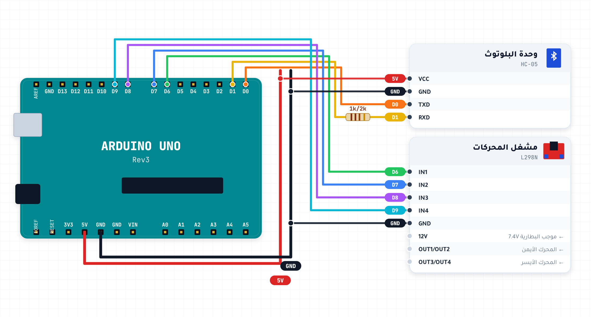

▶فيديو الشرح
هاتفك يصبح جهاز تحكم: تطبيق بلوتوث يرسل أوامر الحركة إلى السيارة.
1المكونات
ARDUINO UNOboardوحدة البلوتوثHC-05مشغل المحركاتL298Nأسلاك توصيلJumper Wiresلوحة تجاربBreadboard
2مخطط التوصيل

اضغط على المخطط لتكبيره · نسخة SVG عالية الدقة
| القطعة | الطرف | يوصل إلى |
|---|---|---|
| وحدة البلوتوث | VCC | 5V |
| وحدة البلوتوث | GND | GND |
| وحدة البلوتوث | TXD | D0 |
| وحدة البلوتوث | RXD | D1 عبر مقاومة 1k/2k |
| مشغل المحركات | IN1 | D6 |
| مشغل المحركات | IN2 | D7 |
| مشغل المحركات | IN3 | D8 |
| مشغل المحركات | IN4 | D9 |
| مشغل المحركات | GND | GND |
| مشغل المحركات | 12V | موجب البطارية 7.4V |
| مشغل المحركات | OUT1/OUT2 | المحرك الأيمن |
| مشغل المحركات | OUT3/OUT4 | المحرك الأيسر |
3الكود
لا يحتاج هذا المشروع إلى أي مكتبة إضافية.
/* المستوى المتقدم — المشروع 1: التحكم في الروبوت عبر البلوتوث (HC-05) كتاب: 38 مشروع في شهر — لؤي النصري (@robotlouay) التوصيل: HC-05: VCC → 5V GND → GND TXD → Pin 0 (RX) RXD ← Pin 1 (TX) عبر مقسم جهد (1kΩ من Pin 1 ثم 2kΩ إلى GND) لأن RXD يعمل بـ 3.3V L298N: IN1 → 6 IN2 → 7 IN3 → 8 IN4 → 9 (كما في المشاريع السابقة) ⚠ افصل سلكي TXD/RXD قبل رفع الكود ثم أعد توصيلهما. التطبيق: أي تطبيق "Bluetooth RC Car" يرسل: F أمام، B خلف، L يسار، R يمين، S توقف. كلمة مرور الإقران الافتراضية: 1234 أو 0000 */ const int IN1 = 6, IN2 = 7, IN3 = 8, IN4 = 9; unsigned long lastCmd = 0; void motors(int r, int l) { digitalWrite(IN1, r == 1); digitalWrite(IN2, r == -1); digitalWrite(IN3, l == 1); digitalWrite(IN4, l == -1); } void setup() { Serial.begin(9600); // سرعة HC-05 الافتراضية pinMode(IN1, OUTPUT); pinMode(IN2, OUTPUT); pinMode(IN3, OUTPUT); pinMode(IN4, OUTPUT); motors(0, 0); } void loop() { if (Serial.available()) { char c = toupper(Serial.read()); lastCmd = millis(); switch (c) { case 'F': motors(1, 1); break; // للأمام case 'B': motors(-1, -1); break; // للخلف case 'L': motors(1, -1); break; // يسار (دوران في المكان) case 'R': motors(-1, 1); break; // يمين case 'S': motors(0, 0); break; // توقف } } // أمان: توقف إذا انقطع الاتصال لأكثر من ثانية if (millis() - lastCmd > 1000) motors(0, 0); }
4كيف يعمل؟
- التطبيق يرسل حرفاً: F B L R S
- HC-05 يمرره إلى الأردوينو عبر RX
- الأردوينو يوجّه L298N
- انقطاع الاتصال → توقف آلي
⚠ قبل توصيل الكهرباء: راجع كل سلك مع الجدول أعلاه، وتأكد من عدم وجود تماس بين 5V و GND. اختر اللوحة والمنفذ الصحيحين من قائمة Tools في Arduino IDE.